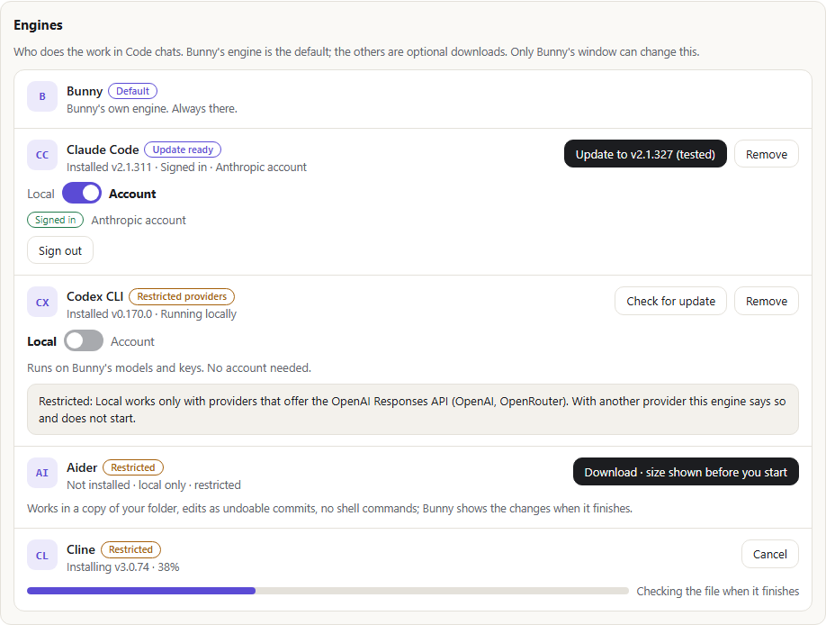
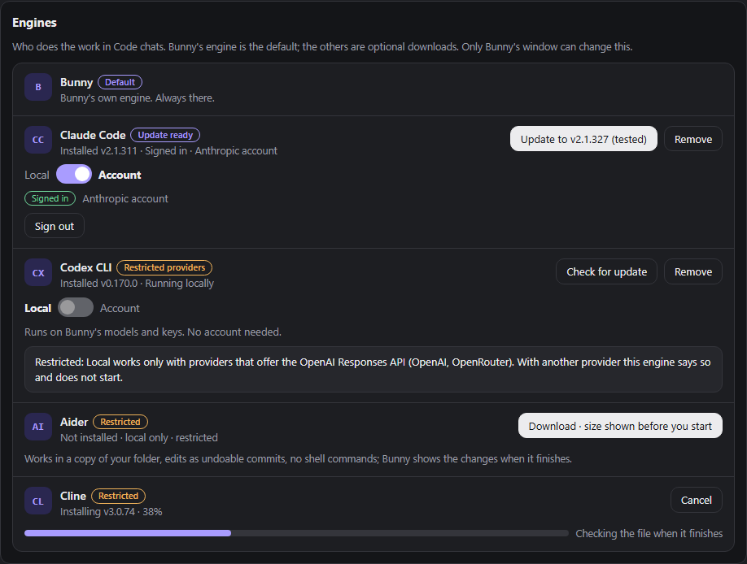

<title>Bunny engines</title>
<meta name="claude:viewport-fit-sides" content="cover">
<style>
/* Layout: version 3, denser. The saving first (v2 beside v3), numbered recommendations, the control (A toggle, B two-option), every state as one row, verdicts and defaults, the engine in a chat, steps, update, phone, Security, questions. Bunny's tokens; invented data. */
:root{--bg:#faf9f6;--panel:#fff;--soft:#f3f1ec;--line:#e4e1da;--fg:#1c1d20;--mute:#62656c;--accent:#5b4bd5;--accent-soft:#eceafb;--ok:#1f7a4a;--ok-soft:#e3f3ea;--warn:#a5600b;--warn-soft:#fbefd9;--bad:#c4304a;--bad-soft:#fbe5e9;--mono:ui-monospace,Consolas,monospace}
@media (prefers-color-scheme:dark){:root:not([data-theme="light"]){--bg:#141518;--panel:#1d1e22;--soft:#26272c;--line:#34353b;--fg:#ececee;--mute:#9a9ca4;--accent:#a99cff;--accent-soft:#2a2750;--ok:#6fd49a;--ok-soft:#18301f;--warn:#f0b35a;--warn-soft:#3a2c12;--bad:#ff7a90;--bad-soft:#3d1a22;color-scheme:dark}}
:root[data-theme="dark"]{--bg:#141518;--panel:#1d1e22;--soft:#26272c;--line:#34353b;--fg:#ececee;--mute:#9a9ca4;--accent:#a99cff;--accent-soft:#2a2750;--ok:#6fd49a;--ok-soft:#18301f;--warn:#f0b35a;--warn-soft:#3a2c12;--bad:#ff7a90;--bad-soft:#3d1a22;color-scheme:dark}
*{box-sizing:border-box}
body{background:var(--bg);color:var(--fg);font:15px/1.5 "Segoe UI",system-ui,sans-serif;padding-block:28px 56px;padding-left:max(16px,env(safe-area-inset-left,0px));padding-right:max(16px,env(safe-area-inset-right,0px))}
main{max-width:1000px;margin:0 auto;display:grid;grid-template-columns:minmax(0,1fr);gap:26px}
main>*,.card>*{min-width:0}
h1{font-size:26px;margin:0 0 4px;text-wrap:balance}h2{font-size:18px;margin:0 0 6px}h3{font-size:15px;margin:0}p{margin:0}
.mute{color:var(--mute)}
.top{display:flex;gap:12px;justify-content:space-between;align-items:flex-start;flex-wrap:wrap}
button.t{font:inherit;color:var(--fg);background:var(--soft);border:1px solid var(--line);border-radius:10px;padding:7px 12px;cursor:pointer}
.tops{display:flex;gap:8px;flex-wrap:wrap}
.card{background:var(--panel);border:1px solid var(--line);border-radius:12px;padding:16px;display:grid;grid-template-columns:minmax(0,1fr);gap:10px}
.rec{display:grid;grid-template-columns:30px 1fr;gap:2px 10px;padding:8px 0;border-top:1px solid var(--line)}
.rec.first{border-top:0}
.rec .n{width:26px;height:26px;border-radius:50%;background:var(--accent-soft);color:var(--accent);display:grid;place-items:center;font-weight:700;font-size:12.5px}
.rec b{display:block}.rec .m{font-size:12.5px;color:var(--mute)}
.pill{display:inline-block;font-size:11px;letter-spacing:.05em;text-transform:uppercase;border-radius:999px;padding:1px 8px;margin-right:6px}
.p-hi{background:var(--bad-soft);color:var(--bad)}.p-low{background:var(--ok-soft);color:var(--ok)}.p-med{background:var(--warn-soft);color:var(--warn)}
.lab{font-size:11px;letter-spacing:.07em;text-transform:uppercase;color:var(--mute);margin-bottom:4px}
.twocol{display:grid;grid-template-columns:minmax(0,1fr) minmax(0,1fr);gap:12px;align-items:start}.twocol>*{min-width:0}
@media (max-width:760px){.twocol{grid-template-columns:minmax(0,1fr)}}
.tbl{overflow-x:auto;border:1px solid var(--line);border-radius:12px;background:var(--panel)}
table{border-collapse:collapse;width:100%;min-width:640px;font-size:13.5px}
th,td{text-align:left;padding:7px 12px;border-top:1px solid var(--line);vertical-align:top}
thead th{border-top:0;background:var(--soft);font-size:12px;letter-spacing:.05em;text-transform:uppercase;color:var(--mute)}
kbd,code{font-family:var(--mono);font-size:12.5px;background:var(--soft);border:1px solid var(--line);border-radius:5px;padding:0 5px}
.note{border:1px solid var(--warn);background:var(--warn-soft);border-radius:10px;padding:10px 14px;font-size:14px}
.phone{width:390px;max-width:100%;margin:0 auto}
.stat{display:flex;gap:10px 22px;flex-wrap:wrap;font-size:14px}.stat b{font-size:22px;display:block;line-height:1.1}
.stat div{min-width:0}
/* app mock */
.app{--bg:#faf9f6;--panel:#fff;--soft:#f3f1ec;--line:#e4e1da;--fg:#1c1d20;--mute:#62656c;--accent:#5b4bd5;--accent-soft:#eceafb;--ok:#1f7a4a;--ok-soft:#e3f3ea;--warn:#a5600b;--warn-soft:#fbefd9;--bad:#c4304a;--bad-soft:#fbe5e9;background:var(--bg);color:var(--fg);border:1px solid var(--line);border-radius:12px;padding:12px;font:14px/1.5 "Segoe UI",system-ui,sans-serif;min-width:0;display:grid;gap:8px;container-type:inline-size}
:root[data-theme="dark"] .app{--bg:#141518;--panel:#1d1e22;--soft:#26272c;--line:#34353b;--fg:#ececee;--mute:#9a9ca4;--accent:#a99cff;--accent-soft:#2a2750;--ok:#6fd49a;--ok-soft:#18301f;--warn:#f0b35a;--warn-soft:#3a2c12;--bad:#ff7a90;--bad-soft:#3d1a22}
@media (prefers-color-scheme:dark){:root:not([data-theme="light"]) .app{--bg:#141518;--panel:#1d1e22;--soft:#26272c;--line:#34353b;--fg:#ececee;--mute:#9a9ca4;--accent:#a99cff;--accent-soft:#2a2750;--ok:#6fd49a;--ok-soft:#18301f;--warn:#f0b35a;--warn-soft:#3a2c12;--bad:#ff7a90;--bad-soft:#3d1a22}}
.app h4{margin:0;font-size:15px}.app .d{font-size:12.5px;color:var(--mute)}
.grp{background:var(--panel);border:1px solid var(--line);border-radius:12px;overflow:hidden}
/* the compact engine row */
.er{display:grid;grid-template-columns:32px minmax(0,1fr) auto auto 28px;gap:10px;align-items:center;padding:9px 12px;border-top:1px solid var(--line)}
.er:first-child{border-top:0}
.er .ti{width:32px;height:32px;border-radius:9px;background:var(--accent-soft);color:var(--accent);display:grid;place-items:center;font:700 12px var(--mono)}
.er .nm{min-width:0}
.er .l1{display:flex;gap:6px 8px;align-items:baseline;flex-wrap:wrap;line-height:1.3}
.er .l1 b{font-weight:600}.er .ver{color:var(--mute);font-size:12.5px}
.er .l2.w{white-space:normal}
.er .l2{font-size:12px;color:var(--mute);white-space:nowrap;overflow:hidden;text-overflow:ellipsis;line-height:1.35;margin-top:1px}
.er .cc{min-width:150px}.er .bt{min-width:150px;display:flex;justify-content:flex-end}
.er .act2{display:contents}.er .mn{width:28px;height:28px;border-radius:8px;display:grid;place-items:center;color:var(--mute);font-weight:700;letter-spacing:1px}
.er .mn.none{visibility:hidden}
@container (max-width:620px){.er{grid-template-columns:32px minmax(0,1fr) 28px;row-gap:6px}.er .nm{grid-column:2}.er .mn{grid-column:3;grid-row:1}.er .act2{display:flex;gap:8px;align-items:center;flex-wrap:wrap;grid-column:1/4;grid-row:2}.er .act2:has(.cc:empty):has(.bt:empty){display:none}.er .cc{min-width:0}.er .bt{min-width:0;margin-left:auto}.er .btn2 .lg{display:none}.er .btn2 .sh{display:inline}}
.chip{display:inline-block;font-size:11px;border-radius:999px;padding:0 8px;border:1px solid var(--line);color:var(--mute);line-height:1.5}
.chip.ok{color:var(--ok);border-color:var(--ok)}.chip.wr{color:var(--warn);border-color:var(--warn)}.chip.ac{color:var(--accent);border-color:var(--accent)}.chip.bad{color:var(--bad);border-color:var(--bad)}
.btn2{display:inline-flex;align-items:center;gap:6px;border:1px solid var(--line);border-radius:9px;padding:4px 11px;font-size:13px;background:var(--panel);white-space:nowrap}
.btn2.pri{background:var(--fg);color:var(--bg);border-color:var(--fg)}
.acts{display:flex;gap:8px;flex-wrap:wrap;align-items:center}
.bar{display:block;height:5px;border-radius:999px;background:var(--line);overflow:hidden;margin-top:5px}.bar i{display:block;height:100%;background:var(--accent)}
.tgw{display:inline-flex;align-items:center;gap:7px;font-size:13px;color:var(--mute)}
.tgw .tl.on{color:var(--fg);font-weight:700}
.sw2{width:38px;height:21px;border-radius:999px;background:var(--mute);position:relative;display:block;flex:none;opacity:.55}
.sw2::after{content:"";position:absolute;top:3px;left:3px;width:15px;height:15px;border-radius:50%;background:#fff}
.sw2.ac{background:var(--accent);opacity:1}.sw2.ac::after{left:20px}.sw2.wr{background:var(--warn);opacity:1}.sw2.wr::after{left:20px}.sw2.lock{opacity:.3}
.tgw.dis{opacity:.8}
.seg{display:inline-flex;border:1px solid var(--line);border-radius:9px;overflow:hidden;background:var(--soft);font-size:13px}
.seg b{padding:3px 13px;font-weight:500;color:var(--mute)}
.seg b.on{background:var(--fg);color:var(--bg);font-weight:700}.seg b.on.wr{background:var(--warn);color:#fff}
.seg.dis{opacity:.85}.seg.dis b.on{background:var(--mute);color:#fff}
.menu{border:1px solid var(--line);border-radius:12px;background:var(--panel);padding:5px;box-shadow:0 10px 28px rgba(20,22,40,.2);width:max-content;max-width:100%}
.menu .mi{padding:6px 10px;border-radius:8px;display:flex;justify-content:space-between;gap:18px;font-size:13.5px}.menu .mi.f{background:var(--soft)}.menu .mi.dis{color:var(--mute)}.menu .mi small{color:var(--mute);font-size:12px}
.menu hr{border:0;border-top:1px solid var(--line);margin:4px 0}
.term{background:#14161b;color:#d7dae0;border-radius:10px;font:12.5px/1.6 var(--mono);overflow:hidden;border:1px solid #2a2d35}
.term .tb{background:#23262e;padding:5px 12px;font:12px "Segoe UI",system-ui,sans-serif;color:#aeb3bd;display:flex;justify-content:space-between}
.term .tx{padding:8px 12px;white-space:pre-wrap;overflow-wrap:anywhere}
.dlg{background:var(--panel);border:1px solid var(--line);border-radius:14px;padding:14px;display:grid;gap:6px;box-shadow:0 14px 44px rgba(20,22,40,.22)}
.callout{border-radius:10px;padding:7px 12px;font-size:13px;background:var(--soft);border:1px solid var(--line)}
.callout.wr{background:var(--warn-soft);border-color:var(--warn)}.callout.bad{background:var(--bad-soft);border-color:var(--bad)}
.hdr{display:flex;justify-content:space-between;gap:8px;align-items:center;flex-wrap:wrap;padding-bottom:6px;border-bottom:1px solid var(--line)}
.chipe{display:inline-flex;gap:6px;align-items:center;border-radius:999px;padding:1px 9px;font-size:12.5px;background:var(--accent-soft);color:var(--accent);font-weight:600;white-space:nowrap}
.chipe i{width:7px;height:7px;border-radius:50%;background:var(--warn);display:inline-block}
.msgu{background:var(--soft);border-radius:14px;padding:8px 12px;justify-self:end;max-width:88%}
.step{display:flex;gap:8px;align-items:baseline;color:var(--mute);font-size:13px;flex-wrap:wrap}.step::before{content:"↳"}.step b{color:var(--fg);font-weight:600}
.eng{font-size:11px;border-radius:6px;padding:0 6px;background:var(--soft);border:1px solid var(--line);color:var(--mute)}
.perm{border:1px solid var(--line);border-radius:12px;padding:10px 12px;background:var(--panel);display:grid;gap:5px}.perm h5{margin:0;font-size:14px}.perm p{margin:0;color:var(--mute);font-size:13px}
.diff{font:12px/1.5 var(--mono);background:var(--soft);border-radius:8px;padding:6px 10px}.diff .a{color:var(--ok)}.diff .r{color:var(--bad)}
.seq{display:grid;gap:12px;grid-template-columns:repeat(auto-fit,minmax(min(100%,300px),1fr));align-items:start}.seq>*{min-width:0}
.seq .lab b{color:var(--accent)}
.stg{display:grid;grid-template-columns:150px minmax(0,1fr);gap:6px 10px;align-items:center}
.stg .c{font-size:12px;color:var(--mute);text-align:right}
@media (max-width:640px){.stg{grid-template-columns:minmax(0,1fr)}.stg .c{text-align:left}}
.vimg{display:block;width:100%;height:auto;border-radius:12px;border:1px solid var(--line)}
.vimg.d{display:none}
:root[data-theme="dark"] .vimg.l{display:none}:root[data-theme="dark"] .vimg.d{display:block}
@media (prefers-color-scheme:dark){:root:not([data-theme="light"]) .vimg.l{display:none}:root:not([data-theme="light"]) .vimg.d{display:block}}
.btn2 .sh{display:none}
.rc{display:inline-block;width:6px;height:6px;border-radius:50%;background:var(--ok);margin-left:5px;vertical-align:middle}.rc.t{background:none;border:1.5px solid var(--mute)}.seg b.on .rc{box-shadow:0 0 0 1.5px rgba(255,255,255,.55)}.seg b.on .rc.t{border-color:#fff;box-shadow:none}
.onoff{width:40px;height:23px;border-radius:99px;background:var(--line);position:relative;display:inline-block;cursor:pointer;flex:none}.onoff i{position:absolute;top:3px;left:3px;width:17px;height:17px;border-radius:50%;background:#fff;transition:left .15s}.onoff.on{background:var(--accent)}.onoff.on i{left:20px}.onoff.dis{opacity:.55;cursor:not-allowed}.er.bn .cc{display:flex;justify-content:flex-end}
@container (max-width:620px){.er.bn{grid-template-columns:32px minmax(0,1fr) auto}.er.bn .act2{grid-column:3;grid-row:1}.er.bn .mn{display:none}}
</style>

<main>
<div class="top">
  <div>
    <h1>Bunny engines</h1>
    <p class="mute">v0.1.14 drawing, version 10. One row per engine. Invented data only. Nothing here is built.</p>
  </div>
  <div class="tops"><button class="t" id="theme" type="button">Show the other theme</button></div>
</div>

<section class="card">
  <h2>Engines</h2>
  <p class="mute">One row per engine: <b>tile · name and dim line · Local | Account switch · main button · ⋯</b>, all on one line. The first row is the new option "Use Bunny's engine" (click its switch to see it off).</p>
  <div class="app" id="v3main"></div>
  <div class="mute" style="font-size:12px;margin-top:4px"><i class="rc"></i> Recommended side &nbsp;·&nbsp; <i class="rc t"></i> recommendation to be confirmed &nbsp;·&nbsp; hover a side for its one-line reason</div>
  <div class="twocol">
    <div><div class="lab">On a phone</div><div class="phone"><div class="app" id="pr-ph"></div></div></div>
    <div><div class="lab">What is in each row</div><p class="mute">Tile, name, one dim line ("v2.1.311 · Signed in · Anthropic"), the Local | Account switch (both sides always offered; a dot marks the recommended one), the one main button (Update to vY (tested), Download, Sign in again), and a ⋯ menu with Check for update, Roll back, Sign out and Remove. "Signed in" lives only in the dim line, and a chip appears only when something needs you (installing, failed, sign-in expired, stopped). On a phone the name and ⋯ keep the first line; the switch and the button share the second.</p></div>
  </div>
</section>

<section class="card">
  <h2>Use Bunny's engine (new option)</h2>
  <p class="mute">The owner's option, the first row of Settings → Engines. <b>On by default.</b> When it is off, chats run on the enabled engines and follow that engine's own rules. It cannot be turned off while no engine is installed.</p>
  <div class="twocol">
    <div><div class="lab"><b>On</b> (the default)</div><div class="app" id="bn-on"></div></div>
    <div><div class="lab"><b>Off</b>, with its warning</div><div class="app" id="bn-off"></div></div>
  </div>
  <div class="twocol">
    <div><div class="lab"><b>No engine installed</b>: the switch stays on and says why</div><div class="app" id="bn-none"></div></div>
    <div><div class="lab">On a phone, off</div><div class="phone"><div class="app" id="bn-ph"></div></div></div>
  </div>
  <p class="mute">The warning is Security's to word; what is drawn says what the owner asked it to say. The row stays on one line, and the warning sits directly under it, never in a dialog, so it is seen where the switch is.</p>
</section>

<section class="card">
  <h2>Recommendations</h2>
  <div class="rec first"><span class="n">1</span><div><b><span class="pill p-med">medium</span>A new Settings page, "Engines", under Code; one compact row per engine</b><span class="m">Bunny's engine first (always there, Default), then Claude Code and Codex CLI (Cline and Aider are not in 0.1.14). Window-only to change; a phone can read it. Notes are one dim line under the name (full text on hover or tap), never extra rows.</span></div></div>
  <div class="rec"><span class="n">2</span><div><b><span class="pill p-med">medium</span>The row's button and a ⋯ menu carry every action</b><span class="m">Main button by state: Download (size) · Cancel · Update to vY (tested) · Sign in again · Try again. The ⋯ menu holds Check for update, Roll back to vX, Sign out, Remove. Section 3.</span></div></div>
  <div class="rec"><span class="n">3</span><div><b><span class="pill p-hi">high</span>Download on click, size first, checked before use</b><span class="m">About 380 MB for Claude Code and 390 MB for Codex CLI. Checksum and, for Claude Code, Anthropic's signature. Claude Code from Anthropic's official installer, unmodified.</span></div></div>
  <div class="rec"><span class="n">4</span><div><b><span class="pill p-hi">high</span>One Local | Account control on each installed engine's row, both sides always offered</b><span class="m">A small dot marks the recommended side (Claude Code: Account, and Local carries the Anthropic note in its tooltip; Codex: to be confirmed, shown as a hollow dot). Account opens the vendor's own sign-in in a visible window; Bunny never sees or stores the token. Back to Local keeps you signed in until Sign out. Defaults: Claude Code Account; Codex Local. The control is the two-option Local | Account control (approved by the owner).</span></div></div>
  <div class="rec"><span class="n">5</span><div><b><span class="pill p-hi">high</span>The catch is in the row's dim line, not a block</b><span class="m">Claude Code on Local: "Anthropic does not support Claude Code with other models; it may stop working after an update." Codex on Local: OpenAI or OpenRouter only (Responses API). Same text, one line.</span></div></div>
  <div class="rec"><span class="n">6</span><div><b><span class="pill p-hi">high</span>"Restricted" is a chip on the row</b><span class="m">Codex runs in full mode (the owner approved it); restricted is the fallback when Bunny's check does not run for Claude Code or Codex. A restricted run shows an amber dot on the chip. Hover or tap the chip for what it means; the legend and the review at the end of a run are shown once in section 5.</span></div></div>
  <div class="rec"><span class="n">7</span><div><b><span class="pill p-med">medium</span>Per chat: a one-line Engine menu and a short chip</b><span class="m">Code chats with a folder pick the engine before the first message; it is fixed after. The chip reads "Claude Code · Account", with an amber dot while a run is restricted. Section 6.</span></div></div>
  <div class="rec"><span class="n">8</span><div><b><span class="pill p-hi">high</span>The engine's steps and prompts look like Bunny's</b><span class="m">Same step lines, Changes pane and permission prompt, a small engine tag; Bunny's rules decide first; if Bunny cannot check an action the run stops and says so. Section 7.</span></div></div>
  <div class="rec"><span class="n">9</span><div><b><span class="pill p-hi">high</span>Updates are Bunny's tested versions, with a way back</b><span class="m">An engine never updates itself. Update downloads and checks the new version, keeps the old one, offers Roll back in the ⋯ menu. A failed check leaves the old version in use. Section 3.</span></div></div>
</section>

<section class="card">
  <h2>2. The control: two-option Local | Account (approved)</h2>
  <p class="mute">Both choices are written out and the chosen one is filled. "Account, sign-in expired" turns the Account half amber, and each half is a radio button for a screen reader ("Account, selected"). The earlier labelled toggle (A) was not chosen and is not built.</p>
  <div class="app" id="alt-b"></div>
</section>

<section class="card">
  <h2>3. Every state is one row</h2>
  <p class="mute">Install, update, roll back, sign in and failure all live in the row's button and its ⋯ menu.</p>
  <div class="app"><div class="stg" id="states"></div></div>
  <div class="twocol">
    <div><div class="lab">The ⋯ menu (Claude Code, after an update)</div><div class="app"><div class="menu"><div class="mi f"><span>Check for update</span></div><div class="mi"><span>Roll back to v2.1.311</span><small>kept</small></div><div class="mi"><span>Sign out</span></div><hr><div class="mi"><span>Remove</span><small>frees 380 MB</small></div></div></div></div>
    <div><div class="lab">The sign-in window Bunny opens (Account turned on)</div><div class="app"><div class="term"><div class="tb"><span>Claude Code sign-in · opened by Bunny</span><span>×</span></div><div class="tx">Opening your browser to sign in…
If it does not open, use this link:
https://claude.ai/…  (the vendor's own page)
Waiting for you to finish in the browser…</div></div><div class="d">A visible window owned by Claude Code. Bunny does not see what is typed or the token it saves. Close it without finishing and the row goes back to Local, and says so.</div></div></div>
  </div>
  <div class="seq">
    <div><div class="lab"><b>Update: confirm</b></div><div class="app"><div class="dlg"><b>Update Claude Code to v2.1.327?</b><span class="d">Bunny tested this version. About 380 MB; checked, then switched over. Your current version stays so you can roll back. Running chats finish first.</span><div class="acts" style="justify-content:flex-end"><span class="btn2">Not now</span><span class="btn2 pri">Update</span></div></div></div></div>
    <div><div class="lab"><b>Roll back: confirm</b></div><div class="app"><div class="dlg"><b>Go back to Claude Code v2.1.311?</b><span class="d">New chats use v2.1.311. A chat started on v2.1.327 starts a fresh engine session with Bunny's transcript carried over. v2.1.327 is removed.</span><div class="acts" style="justify-content:flex-end"><span class="btn2">Cancel</span><span class="btn2 pri">Roll back</span></div></div></div></div>
  </div>
</section>

<section class="card">
  <h2>4. Verdicts and defaults (Tech Lead, revision 3)</h2>
  <div class="tbl"><table>
    <thead><tr><th>Engine</th><th>Default</th><th>Other choice</th><th>Is every action checked first?</th><th>If its test fails</th></tr></thead>
    <tbody>
      <tr><td><b>Claude Code</b></td><td>Account</td><td>Local (with the Anthropic note)</td><td>Yes: a hook runs before every tool call and asks Bunny</td><td>The run stops; the chat offers restricted mode (staged copy)</td></tr>
      <tr><td><b>Codex CLI</b></td><td>Local</td><td>Account (its own login, to confirm)</td><td>Yes, through its approval requests</td><td>Runs in full mode (approved by the owner); if its check does not run, the same stop and restricted offer</td></tr>
    </tbody>
  </table></div>
  <p class="mute">Rule kept: an engine is offered only if its check passes; "restricted" is the owner-approved fallback, not a weaker version of the rule. In 0.1.14 only Claude Code and Codex CLI are offered; Cline and Aider are left out. The Stopped card and the path to restricted mode are in section 5.</p>
</section>

<section class="card">
  <h2>5. Fallback when a check fails</h2>
  <p class="mute">Bunny checks every action before an engine runs it. If that check does not run (the watchdog sees no answer), the run stops, nothing is executed, and the chat offers restricted mode. It is the same for Claude Code and Codex CLI. Four steps:</p>
  <div class="twocol">
    <div><div class="lab"><b>1 · The run stops</b></div><div class="app"><div class="hdr"><span><b>Fix the footer links</b> · my-site</span><span class="chipe">Claude Code · Account</span></div><div class="step"><b>Edited</b> <code>footer.html</code> <span class="eng">Claude Code</span></div><div class="callout bad" style="margin-top:8px"><b>Stopped: Bunny's check did not run.</b> Claude Code tried to run a step, but the check Bunny makes before every step did not answer. Nothing was run and nothing was changed after the last step above.<div class="acts" style="margin-top:6px"><span class="btn2 pri">Try in restricted mode</span><span class="btn2">Try again</span><span class="btn2">Dismiss</span></div></div></div></div>
    <div><div class="lab"><b>2 · Asked before anything starts</b></div><div class="app"><div class="dlg"><b>Try this in restricted mode?</b><span class="d">Claude Code works in a copy of your folder, saves every edit as a commit you can undo, and cannot run shell commands. Nothing reaches your folder until you have looked at what changed. It could still read a file outside the copy if the model names its path; Bunny blocks the known routes.</span><div class="acts" style="justify-content:flex-end"><span class="btn2">Cancel</span><span class="btn2 pri">Try in restricted mode</span></div></div></div></div>
  </div>
  <div class="twocol">
    <div><div class="lab"><b>3 · Working in a copy</b></div><div class="app"><div class="hdr"><span><b>Fix the footer links</b> · my-site</span><span class="chipe">Claude Code · Account <i></i></span></div><div class="d" style="margin:6px 0">Restricted · working in a copy of your folder. Hover the chip for what that means.</div><div class="step"><b>Edited</b> <code>footer.html</code> <span class="eng">Claude Code · restricted</span></div><div class="step"><b>Edited</b> <code>header.html</code> <span class="eng">Claude Code · restricted</span></div></div></div>
    <div><div class="lab"><b>4 · Your review at the end</b></div><div class="app"><div class="perm"><h5>Claude Code changed 2 files in a copy of your folder</h5><div class="diff"><div>footer.html</div><div class="a">+ Added the privacy link.</div><div class="r">- Old footer link removed.</div><div>header.html</div><div class="a">+ Fixed the menu link.</div></div><div class="acts"><span class="btn2 pri">Keep the changes</span><span class="btn2">Show all</span><span class="btn2">Discard</span></div></div></div></div>
  </div>
  <div class="twocol">
    <div><div class="lab">What the chip's tooltip says</div><div class="app"><div class="callout wr"><b>Restricted.</b> Bunny cannot ask before every step the way it does with its own engine, so this engine works in a copy of your folder, saves every edit as a commit you can undo, cannot run shell commands, and Bunny shows what changed before anything reaches your folder. It could still read a file outside the copy if the model names its path; Bunny blocks the known routes and tests this first.</div></div></div>
    <div><div class="lab">On a phone</div><div class="phone"><div class="app"><div class="hdr"><span><b>Fix the footer links</b></span><span class="chipe">Claude Code <i></i></span></div><div class="callout bad" style="margin-top:8px"><b>Stopped: Bunny's check did not run.</b> Nothing was run.<div class="acts" style="margin-top:6px"><span class="btn2 pri">Try in restricted mode</span><span class="btn2">Dismiss</span></div></div></div></div></div>
  </div>
</section>

<section class="card">
  <h2>6. Per chat: the Engine menu and the chip</h2>
  <div class="twocol">
    <div><div class="lab">Version 2 (before): two lines per engine</div><div class="app"><div class="menu"><div class="mi f"><span>Bunny<br><small>Default · always there</small></span></div><div class="mi"><span>Claude Code<br><small>v2.1.311 · account</small></span></div><div class="mi"><span>Codex CLI<br><small>v0.170.0 · local</small></span></div></div></div></div>
    <div><div class="lab">Version 3 (now): one line per engine</div><div class="app"><div class="menu"><div class="mi f"><span>Bunny</span><small>Default</small></div><div class="mi"><span>Claude Code · Account</span><small>v2.1.311</small></div><div class="mi"><span>Codex CLI · Local</span><small>v0.170.0</small></div></div></div></div>
  </div>
  <div class="twocol">
    <div><div class="lab">Chip, version 2</div><div class="app"><div class="hdr"><span><b>Fix the footer links</b> · my-site</span><span class="chipe">Claude Code · account</span></div><div class="d">This chat runs on Claude Code. To use another engine, start a new chat.</div><div class="acts"><span class="btn2">New chat with Bunny</span><span class="btn2">New chat…</span></div></div></div>
    <div><div class="lab">Chip, version 3: one header line, the rest on hover</div><div class="app"><div class="hdr"><span><b>Fix the footer links</b> · my-site</span><span class="acts"><span class="chipe">Claude Code · Account</span><span class="chipe">Claude Code · Account <i></i></span></span></div><div class="d">Hover the chip: "This chat runs on Claude Code (Account). To use another engine, start a new chat." The amber dot (second chip) means this run is restricted.</div></div></div>
  </div>
</section>

<section class="card">
  <h2>7. Steps and permission prompts</h2>
  <div class="seq">
    <div><div class="lab"><b>In the transcript (Claude Code)</b></div><div class="app"><div class="msgu">The footer links point to the old site. Fix them.</div><div class="step"><b>Looked at</b> <code>footer.html</code> <span class="eng">Claude Code</span></div><div class="step"><b>Edited</b> <code>footer.html</code> · 3 lines <span class="eng">Claude Code</span></div><div class="perm"><h5>Allow this command?</h5><p><code>npm run build</code> in my-site. Bunny's rules say Ask.</p><div class="acts"><span class="btn2 pri">Allow once</span><span class="btn2">Always allow</span><span class="btn2">Deny</span></div></div></div></div>
    <div><div class="lab"><b>Refused, and stopped</b></div><div class="app"><div class="step"><b>Refused</b> <code>.ssh/config</code> is in a protected folder <span class="eng">Claude Code</span></div><div class="callout bad"><b>Stopped.</b> Claude Code asked to do something Bunny could not check first, so Bunny stopped the run. Nothing was run.</div><div class="acts"><span class="btn2">Try again</span><span class="btn2">Continue on Bunny</span></div></div></div>
  </div>
</section>

<section class="card">
  <h2>Phone</h2>
  <p class="mute">Settings change only in Bunny's window. On a phone the list is read-only and the controls show their state.</p>
  <div class="twocol">
    <div><div class="lab">Engines on a phone</div><div class="phone"><div class="app" id="p-set"></div></div></div>
    <div><div class="lab">A Code chat on a phone</div><div class="phone"><div class="app"><div class="hdr"><span><b>Fix the footer links</b></span><span class="chipe">Claude Code · Account</span></div><div class="msgu">Fix the footer links.</div><div class="step"><b>Edited</b> <code>footer.html</code> <span class="eng">Claude Code</span></div><div class="perm"><h5>Allow this command?</h5><p><code>npm run build</code></p><div class="acts"><span class="btn2 pri">Allow once</span><span class="btn2">Deny</span></div></div></div></div></div>
  </div>
</section>

<section class="card">
  <h2>For Security and the owner</h2>
  <div class="tbl"><table>
    <thead><tr><th>What</th><th>Proposed rule</th></tr></thead>
    <tbody>
      <tr><td>Downloaded programs run on the PC (130 to 390 MB each)</td><td>Download only on click from the vendor's official release; checksum and, for Claude Code, Anthropic's signature before first run; stored in Bunny's folder; own config home per engine and mode; trimmed environment.</td></tr>
      <tr><td>Sign-in</td><td>The vendor's own, in a visible window. Bunny does not read, copy or store the token. Anthropic forbids third-party apps collecting or relaying Claude.ai credentials.</td></tr>
      <tr><td>Bunny's rules must hold</td><td>Every action judged by Bunny before it runs; if that cannot be done the engine is restricted or not offered; a failure stops the run.</td></tr>
      <tr><td>Restricted engines</td><td>Copy of the folder only, edits as commits, shell off, review before keeping; the owner's explicit yes to offering them this way.</td></tr>
      <tr><td>Local mode</td><td>One listener per run on 127.0.0.1, one-use token, no browser Origin, keys never leave Bunny.</td></tr>
      <tr><td>Window and devices</td><td>Engine settings and installs are window-only; Chats-level devices never run an engine.</td></tr>
      <tr><td>Terms (owner's call)</td><td>Researcher flags Anthropic's Commercial Terms for Claude Code inside another app. Not a legal opinion.</td></tr>
    </tbody>
  </table></div>
  <ul style="margin:6px 0 0;padding-left:20px;display:grid;gap:4px">
    <li><b>Left out of 0.1.14 by the owner's word:</b> Cline and Aider. Codex runs in full mode. Restricted mode stays as the fallback (section 5).</li>
    <li><b>Codex "Account":</b> drawn as its own login; confirm it exists before building.</li>
    <li><b>The go</b> to build, after Security's requirements.</li>
  </ul>
</section>
<section class="card">
  <h2>Before (replaced, shown small)</h2>
  <p class="mute">Version 2, with five engines and the labelled toggle (A). Replaced by the one-row design above; it is here only for the record.</p>
  <div class="twocol">
    <div><div class="lab">Desktop, version 2</div><div style="max-width:460px"></div></div>
    <div><div class="lab">Phone, the same shape</div><div class="phone" style="max-width:330px"><div class="app" id="t-ph"></div></div></div>
  </div>
  <h3 style="margin:14px 0 4px">Notes and history</h3>
  <p style="margin-top:8px"><span class="pill p-low">Approved</span> The owner approved this page on 2026-11-18, typed in the Chief of Staff's chat: "Approve, with the two-option switch (recommended)". <b>The control is the two-option Local | Account control (B). The labelled toggle (A) is not built.</b></p>
  <p style="margin-top:8px"><span class="pill p-med">Updated 2026-11-19</span> <b>Version 9: every engine offers both sides, signed in or out, with a small mark on the recommended side</b> (the owner: "there should be an option to use all engines both signed in and out, with recommendations where applicable"; the mark is a dot inside the same row, no extra row). <b>Version 8: tighter rows</b> (the owner: "improve the layout, tighten the rows"): one line per engine, the version in the dim line, no "Signed in" or "Update ready" chip, the actions in ⋯. <b>Only Claude Code and Codex CLI, besides Bunny, in 0.1.14.</b> The owner: "lets remove cline and other for now, just focus on codex and claude." Cline and Aider are left out (Security ruled Cline unsafe in any mode). <b>Codex runs in full mode</b> (the owner approved it). <b>Restricted mode stays in 0.1.14 as the fallback</b> for Claude Code and Codex: when Bunny's check does not run, the chat stops and offers it (section 5).</p>
</section>
</main>

<script>
(function(){
  var variant='seg';
  function btn(t,c){return '<span class="btn2'+(c?' '+c:'')+'">'+t+'</span>';}
  function chip(t,c){return '<span class="chip'+(c?' '+c:'')+'">'+t+'</span>';}
  function ctl(v,mode,t){
    var acct=(mode==='account'||mode==='warn'||mode==='pending');
    if(mode==='fixed'){return v==='seg'?'<span class="seg dis"><b class="on">Local</b><b>Account</b></span>':'<span class="tgw dis"><span class="tl on">Local</span><span class="sw2 lock"></span><span class="tl">Account</span></span>';}
    if(v==='seg'){var rec=t==='CC'?'account':(t==='CX'?'tbd':'');var dot=function(s){return rec===s?'<i class="rc" aria-hidden="true"></i>':(rec==='tbd'?'<i class="rc t" aria-hidden="true"></i>':'');};var tl=t==='CC'?'Anthropic does not support Claude Code with other models; it may stop working after an update.':(t==='CX'?'Recommendation to be confirmed (TBD).':'');var ta=t==='CC'?'Recommended: sign in with your Anthropic account.':(t==='CX'?'Recommendation to be confirmed (TBD).':'');return '<span class="seg" role="radiogroup" aria-label="Account or Local"><b role="radio" aria-checked="'+(!acct)+'" title="'+tl+'" class="'+(!acct?'on':'')+'">Local'+dot('local')+'</b><b role="radio" aria-checked="'+acct+'" title="'+ta+'" class="'+(acct?'on'+(mode==='warn'?' wr':''):'')+'">Account'+dot('account')+'</b></span>';}
    return '<span class="tgw" role="switch" aria-label="Account or Local"><span class="tl'+(!acct?' on':'')+'">Local</span><span class="sw2'+(acct?' ac':'')+(mode==='warn'?' wr':'')+'"></span><span class="tl'+(acct?' on':'')+'">Account</span></span>';
  }
  // o: t, name, ver, st (html), note, mode (null = no control), btn, mn (bool), prog
  function vn(o){return (o.ver&&!/not installed|built in/.test(o.ver)?o.ver+' · ':'')+(o.note||'');}
  function er(o,v){
    return '<div class="er'+(o.ctlh!=null?' bn':'')+'"><span class="ti">'+o.t+'</span><div class="nm"><div class="l1"><b>'+o.name+'</b>'+(o.st?' '+o.st:'')+'</div>'+(o.prog!=null?'<span class="bar"><i style="width:'+o.prog+'%"></i></span><div class="l2">'+vn(o)+'</div>':'<div class="l2'+(o.wrap?' w':'')+'" title="'+vn(o).replace(/"/g,'')+'">'+vn(o)+'</div>')+'</div><div class="act2"><div class="cc">'+(o.ctlh!=null?o.ctlh:(o.mode?ctl(v,o.mode,o.t):''))+'</div><div class="bt">'+(o.btn||'')+'</div></div><span class="mn'+(o.mn?'':' none')+'">···</span></div>';
  }
  var CCN='Anthropic does not support Claude Code with other models; it may stop working after an update.';
  var MAIN=[
   {t:'B',name:'Bunny',ver:'built in',note:'Default · always there'},
   {t:'CC',name:'Claude Code',ver:'v2.1.311',note:'Signed in · Anthropic',mode:'account',btn:btn('<span class="lg">Update to v2.1.327 (tested)</span><span class="sh">Update</span>','pri'),mn:true},
   {t:'CX',name:'Codex CLI',ver:'v0.170.0',note:'Full mode · Local',mode:'local',btn:'',mn:true}
  ];
  var BUNNY_ON=true;
  function swt(on,dis){return '<span class="onoff'+(on?' on':'')+(dis?' dis':'')+'" role="switch" aria-checked="'+on+'" aria-label="Use Bunny\'s engine"'+(dis?' aria-disabled="true"':'')+'><i></i></span>';}
  function bunny(on,none){return {t:'B',name:'Use Bunny\'s engine',ver:'',note:none?'On · install an engine below to be able to turn this off':(on?'Default · Bunny\'s rules and your permission settings apply to every chat':'Off · chats run on the enabled engines and follow their own rules'),ctlh:swt(on,none),btn:'',mn:false};}
  var BWARN='<div style="padding:0 12px 10px"><div class="callout wr"><b>Bunny\'s rules do not apply to chats now.</b> Chats run on the enabled engines (Claude Code, Codex CLI) and follow each engine\'s own rules, not Bunny\'s permission rules or the check Bunny makes before every step. Turn it back on to return to Bunny\'s rules. <span class="mute">Wording: Security\'s, to come.</span></div></div>';
  function blist(on,none,rest){return '<div class="grp">'+er(bunny(on,none),'seg')+(on?'':BWARN)+rest.map(function(r){return er(r,variant);}).join('')+'</div>';}
  function list(rows,v){return '<div class="grp">'+rows.map(function(r){return er(r,v);}).join('')+'</div>';}
  function paint(){
    var REST=MAIN.slice(1);document.getElementById('v3main').innerHTML='<h4>Engines</h4>'+blist(BUNNY_ON,false,REST);
    
    
    document.getElementById('alt-b').innerHTML=list(MAIN.slice(1,3),'seg');
    var S=[
     ['Not installed',{t:'CC',name:'Claude Code',ver:'not installed',note:'Installed from Anthropic\'s official installer, unmodified. Needs your Anthropic account.',mode:null,btn:btn('Download · 380 MB','pri')}],
     ['Installing',{t:'CX',name:'Codex CLI',ver:'v0.170.0',st:chip('Installing','ac'),note:'112 of 390 MB · 29%',prog:29,mode:null,btn:btn('Cancel')}],
     ['Last run stopped',{t:'CC',name:'Claude Code',ver:'v2.1.311',st:chip('Stopped','wr'),note:'Bunny\'s check did not run, so the last run was stopped. The chat offers Try in restricted mode.',mode:'account',mn:true}],
     ['Installed',{t:'CX',name:'Codex CLI',ver:'v0.170.0',note:'Local · tested with Bunny',mode:'local',mn:true}],
     ['Update ready',{t:'CC',name:'Claude Code',ver:'v2.1.311',note:'v2.1.327 is tested with Bunny; newer versions wait until tested.',mode:'account',btn:btn('Update to v2.1.327','pri'),mn:true}],
     ['Updating',{t:'CC',name:'Claude Code',ver:'v2.1.311',st:chip('Updating','ac'),note:'61% · still on v2.1.311 until the new one is checked',prog:61,mode:'account',btn:btn('Cancel')}],
     ['After an update',{t:'CC',name:'Claude Code',ver:'v2.1.327',note:'Previous v2.1.311 kept · Roll back is in the ⋯ menu',mode:'account',mn:true}],
     ['Could not install',{t:'CX',name:'Codex CLI',ver:'v0.170.0',st:chip('Failed','bad'),note:'The file did not match its checksum, so it was thrown away. Nothing was installed.',mode:null,btn:btn('Try again','pri')}],
     ['Turning Account on',{t:'CC',name:'Claude Code',ver:'v2.1.311',st:chip('Waiting for sign-in','ac'),note:'A sign-in window is open. Finish there, or Cancel to stay on Local.',mode:'pending',btn:btn('Cancel'),mn:true}],
     ['Sign-in expired',{t:'CC',name:'Claude Code',ver:'v2.1.311',st:chip('Sign-in expired','wr'),note:'Account needs you to sign in again.',mode:'warn',btn:btn('Sign in again…','pri'),mn:true}],
     ['Window closed early',{t:'CC',name:'Claude Code',ver:'v2.1.311',note:'Sign-in was not finished, so this engine is back on Local. '+CCN,wrap:true,mode:'local',mn:true}]
    ];
    document.getElementById('states').innerHTML=S.map(function(s){return '<div class="c">'+s[0]+'</div><div class="grp">'+er(s[1],variant)+'</div>';}).join('');
    document.getElementById('p-set').innerHTML='<h4>Engines</h4><div class="d">Only Bunny\'s window can change these.</div><div class="grp">'+MAIN.map(function(r){var q=Object.assign({},r,{btn:'',mn:false});if(q.mode==='account'){q.note='Account · every action checked first';}return er(q,variant);}).join('')+'</div>';
    document.getElementById('pr-ph').innerHTML='<h4>Engines</h4>'+blist(BUNNY_ON,false,REST);
    document.getElementById('bn-on').innerHTML=blist(true,false,[]);document.getElementById('bn-off').innerHTML=blist(false,false,[]);document.getElementById('bn-none').innerHTML='<div class="grp">'+er(bunny(true,true),'seg')+'</div>';document.getElementById('bn-ph').innerHTML=blist(false,false,[]);
    document.getElementById('t-ph').innerHTML='<h4>Engines</h4>'+todayMock();
    fitStat();
  }
  function todayMock(){
    function blk(t,n,badge,sub,ctlh,chiprow,btns){return '<div style="padding:10px 12px;border-top:1px solid var(--line);display:grid;gap:6px"><div style="display:flex;gap:8px;align-items:center"><span class="ti" style="width:32px;height:32px;border-radius:9px;background:var(--accent-soft);color:var(--accent);display:grid;place-items:center;font:700 12px monospace">'+t+'</span><div><b>'+n+'</b> '+badge+'<div class="l2" style="white-space:normal">'+sub+'</div></div></div>'+(ctlh?'<div>'+ctlh+'</div>':'')+(chiprow?'<div style="display:flex;gap:6px;align-items:center">'+chiprow+'</div>':'')+'<div class="acts">'+btns+'</div></div>';}
    return '<div class="grp">'+blk('B','Bunny',chip('Default','ac'),'Bunny\'s own engine. Always there.','','','')+blk('CC','Claude Code',chip('Update ready','ac'),'Installed v2.1.311 · Signed in · Anthropic account',ctl('tg','account'),chip('Signed in','ok')+' <span class="mute">Anthropic account</span>',btn('Sign out')+btn('Update to v2.1.327 (tested)','pri')+btn('Remove'))+blk('CX','Codex CLI',chip('Restricted providers','wr'),'Installed v0.170.0 · Running locally',ctl('tg','local'),'',btn('Check for update')+btn('Remove'))+'</div>';
  }
  ['v3main','pr-ph'].forEach(function(id){document.getElementById(id).addEventListener('click',function(e){if(e.target.closest('.onoff')){BUNNY_ON=!BUNNY_ON;paint();}});});
  function fitStat(){
    if(!document.getElementById('stat'))return;
    var v3=document.getElementById('v3main');var img=document.getElementById('v2l');
    var d=document.documentElement,dark=d.getAttribute('data-theme')?d.getAttribute('data-theme')==='dark':window.matchMedia('(prefers-color-scheme: dark)').matches;
    var im=dark?document.getElementById('v2d'):img;var h2=im.getBoundingClientRect().height,h3=v3.getBoundingClientRect().height;
    if(!h2||!h3)return;if(v3.getBoundingClientRect().width<700){document.getElementById('stat').innerHTML='<div><b>about half</b>the height per engine, measured at desktop width (open this page wider to see the numbers)</div><div><b>3 rows</b>one per engine, no extra blocks</div>';return;}var scale=im.naturalWidth?im.getBoundingClientRect().width/im.naturalWidth:1;
    document.getElementById('stat').innerHTML='<div><b>'+Math.round(h2/5)+' px</b>per engine, version 2</div><div><b>'+Math.round(h3/3)+' px</b>per engine, version 3</div><div><b>'+Math.round((1-(h3/3)/(h2/5))*100)+'% less</b>less height for each engine (version 2 pictures five, version 3 three)</div><div><b>3 rows</b>one per engine, no extra blocks</div>';
  }
  
  document.getElementById('theme').addEventListener('click',function(){var r=document.documentElement,d=r.getAttribute('data-theme')?r.getAttribute('data-theme')==='dark':window.matchMedia('(prefers-color-scheme: dark)').matches;r.setAttribute('data-theme',d?'light':'dark');setTimeout(fitStat,60);});
  paint();window.addEventListener('load',fitStat);window.addEventListener('resize',fitStat);setTimeout(fitStat,400);
  document.getElementById('v2l').addEventListener('load',fitStat);
})();
</script>
